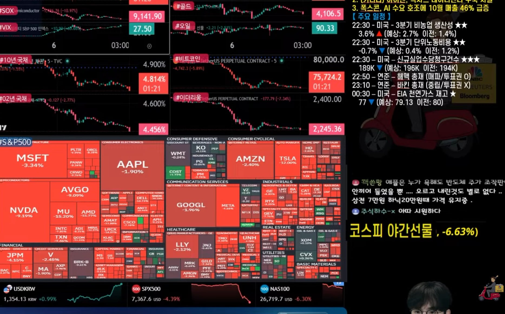

점점 더 심해지고 있음
코스피 야선 하한이 -8퍼인데 근접중

점점 더 심해지고 있음
코스피 야선 하한이 -8퍼인데 근접중
난 니가 무슨말하고 싶은지 모르겠는데 너 연준의장이라서 미래 기준금리 예측 가능해? 현시점에 가장 정확하게 볼수있는건 국채 수익률로 나오는 시장반응이지
국채 수익률이 시장반응이 아니라는게 아니라 너랑 쟤랑 기준금리가 주식시장에서의 영향력에 대한부분과 현재 폭락은 트럼프가 연준 독립성 침해하면서까지 시장컨트롤했던걸 못하게 되니 그런것이라는 주장, 미민당 ai규제로 생긴 폭락이라는 주장을 얘기하는데 국채금리를 근거로 가져와선 아무답이 될게 없다는뜻임;; 미래를 맞추고자시고가 왜 나오는지부터가 뭔 대화를 하고있는질 모르는거같은데;;
첫댓글부터가 트럼프가 이란전쟁 확전하고 유가 150불 간다는 시간여행자 수준의 예측인데 나보곤 미래 맞추지 말라니 글 안읽은건 너 아님?
니보고 미래를 맞추지 말라는게 아니라
니가 나보고 연준의장이라 미래를 아냐고
묻길래 하는말인데 그냥 본인 할말만 하는편이구나 화이팅해라...
미래를 알수없으니 그때 시장참여자의 반응을 봐야 안다는게 내가 국채금리 말 꺼내는 근거닌깐 ? 너 뭐 기준금리 꺼내면 기준금리로만 봐야한다는 주의임? 그렇게밖에 못보니 내말에 열불내는구나 ㅋ
너랑 쟤랑하고 있는 논쟁 자체가 미래의일이 아니라 이미 벌어진 사태에 대한 이유가 무엇인지에 대한 얘기인데 그 당시의 시장 반응을 근거로 가져오는게 무슨 답이되냐고
미래 얘기가 왜 나오는거임 도대체?
나랑 같은 글을 보고 있는거 맞음? ㅋ
기준금리 나온것도 2022년 다시 재현한다라는 예언수준의 예측에서 나온건데? ㅋㅋㅋ 지금 역사공부중인거임?
25-26은 금리 인상 단 1회였음. 중금리 상태에서 증시가 오른 건 금리를 무시한 상승이 전혀 아님.
금리와 증시가 따로 간다? 이건 기초상식을 무시한 새로운 논리 탄생에 가깝지.
라는 주장에
니가 금리와 증시는 따로갈수있다고
국채금리 꺼내오면서 시장 반응을 얘기한거임
근데 시장반응은 결과지 그 결과에 대한 근거가 아니라니까? 니가 쟤 말에 반박하려면
시장반응이 아니라 근거를 대야한다고..
그건 미래의일이 아니에요 과거일이지
그닌깐 그말을
유가가 오름 -> 물가가 오름 -> 물가를 잡기 위해 금리를 올림 -> 유동성이 마름 -> 2022년 같은 장기 대세하락장 유발
이 있지도 않은 트럼프가 중간선거 이겼을때 시간선을 설명하기 위해 꺼낸거라닌깐??
바로 윗댓글인데도 안보임? 이렇게 까지 말했는데 이해 못하면 진짜 안타깝다
그러니까 그걸 반박하려면 국채금리론 아무것도 답이안된다고 몇번을 말함 아 씨발
중졸임?
와 이새낀 진자 본인이 뭘 잘못말하고 있는지 아는데도 끝까지 우기네 ㅋㅋ 대단하다 니 좆대로 사세요 ㅋㅋㅋ
니가 믿는 절대신 기준금리대로 설명하자면 26년나스닥보다 제로금리였던 2021년 나스닥이 더높아야죠? ㅋㅋㅋ 이 딴 저능아 수준에 맞는 설명하기 싫어서 말안하고 있었는데 꺼내게 만드는구나 ㅋㅋ
그래 반박을 하려면 말이 맞든 아니든 그렇게 해야하는거라고 말해주는거야
그리고 기준금리만으로 주가가 정해진다고 주장하는사람은 아무도 없어 혼자 외로운 싸움하지말고 그 시간에 경제학원론 첫장이라도 넘겨보렴
ㅇㅇ 그래 ㅋ 니 바로위에 금리 올리닌깐 장기 하락장 온다는 댓글도 못읽는 친구야 ㅋ 읽기 좋아하는거 같은데 바로 위에 댓글이라도 좀 읽으렴 ㅋㅋ
You lose
금리랑 증시가 따로간댄다 시발 ㅋㅋ 금리가 뭔진 알고 있는거지?
https://www.mk.co.kr/news/world/12162045
"AI 시대, 금리는 조연일 뿐"… 투자 늘고 증시 오른다는 월가
월가 이씹새들 금리가 뭔지 모르나 본데 니가 좀 가르쳐 줘라
얘 말 맞는데...왜들 지랄임.
트럼프 관세에 이란전쟁 개지랄하는데 마가 아니면 싫어하지않나 ㅋㅋ
진짜 팝콘이네
트럼프 잘가라 시벌놈의 유가 좀 진정돠면 좋겠다
K 마가는 진짜 왜 있는거임?
트럼프 믿고 돈넣어서
라고 하기엔 지금 글로벌 금융시장이 다 트럼프의 AI폭주전쟁에 의지해서 오른거임.. 25-26 트럼프 임기내내 코스피가 미친듯이 오른게 그 이유임. 트럼프는 AI포기 못한다. 무조건 AI에 올인할거다.. 트럼프 믿고 돈 넣은얘가 트럼프미디어, 도지코인 이런거만 있는게 아님ㅋㅋㅋ 걍
어차피 트럼프 조져지면 이렇게 될거 알고 있었잖아
아 그때팔껄~ 말고 할게있냐
공포에 사라!!!
속슬 45달라 하따진입완료-
죽는거에요?
코스피 야선 지금 -7.39프로
빨간색이 상승아냐?
잠이 오냐 존댔다
꺅
???: 어으 통쾌해!!! ㅋㅋㅋㅋ
트럼프는 평생 숨어살아라
길걸어다니면 총맞을준비하고
이건 다 예상한거 아님? ㅋㅋ
그 근거를 서로 다르게 주장하고있잖아
넌 니가 지금 무슨 얘길 하고있는지도 모르고 하는중인가보네;;